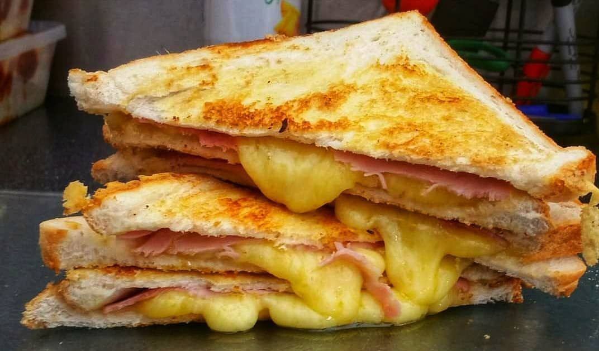

Toastie

Description
A grilled cheese is a hot sandwich typically prepared by heating one or more slices of cheese between slices of bread, with a cooking fat such as butter or mayonnaise on a frying pan, griddle, or sandwich toaster, until the bread browns and the cheese melts.
Ingredients
Steps
- Make ham sandwich
- Place cheese on top of sandwich
- Put sandwich in toasie maker